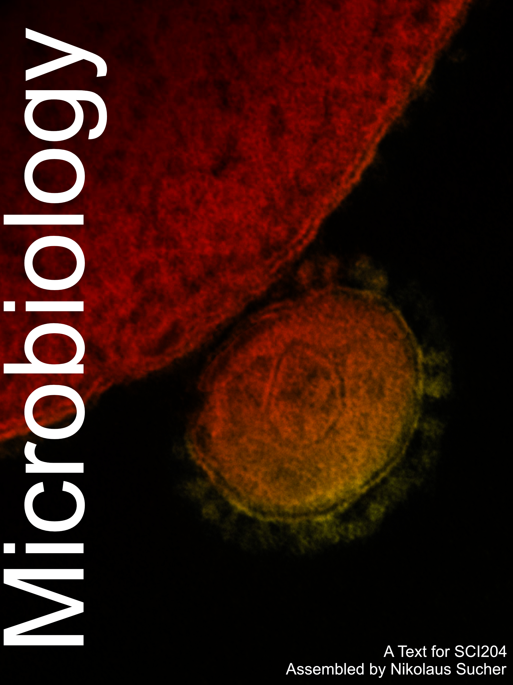

Text For SCI204 Microbiology at Roxbury Community College
Welcome
This is a Text for the Microbiology course (SCI204) at RCC.

The cover image shows a transmission electron micrograph of Middle East respiratory syndrome coronavirus. Credit: National Institute of Allergy and Infectious Diseases (NIAID)
This work is licensed under the Creative Commons Attribution-Share Alike 3.0 Unported United States License.